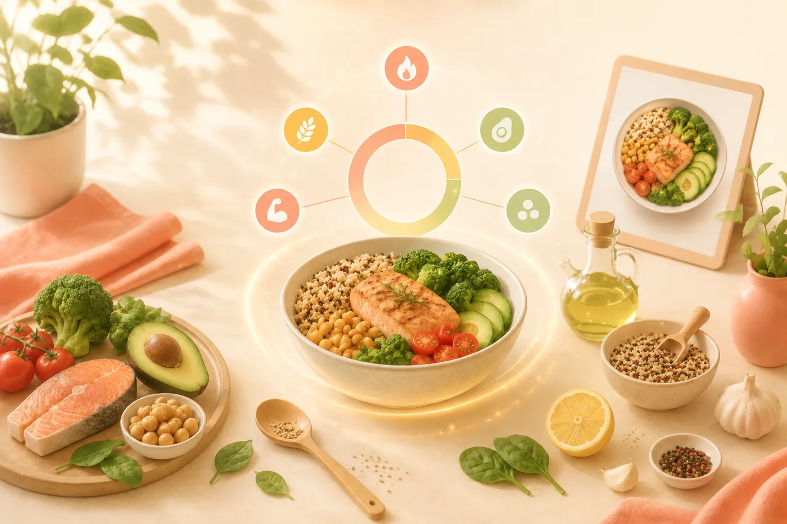
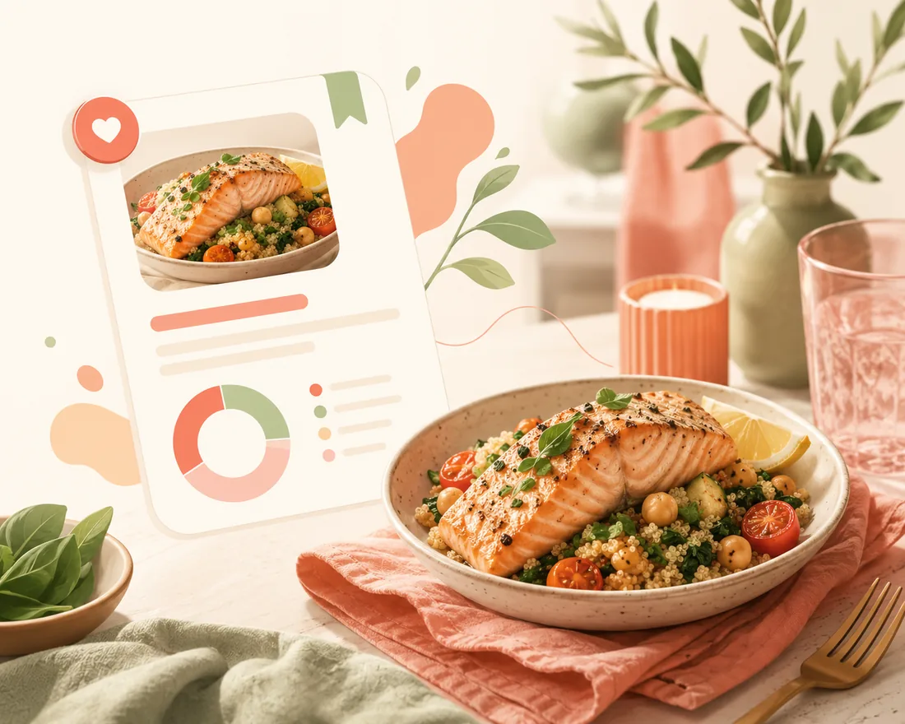

Tus propias recetas, resueltas del todo — una sola vez.
La comida casera es justo la parte que casi todas las apps de calorías abandonan en silencio. Añade una receta escribiéndola, pegándola o fotografiándola, dile a Fotocal cuántas raciones salen y calculará qué contiene el plato entero y qué contiene una ración: calorías, macros y micronutrientes. Luego la guarda, y la próxima vez que la cocines registrarla cuesta un toque.

Cocina una vez, resuelto para siempre.
El trabajo ocurre la primera vez. A partir de ahí, tu receta se comporta como cualquier otro alimento de la base de datos.
Añade la receta
Escribe los ingredientes, pégalos de donde los hayas encontrado o fotografía una receta escrita o impresa y deja que Fotocal la lea.
Di cuánto sale
Indica el número de raciones, o el peso final si te resulta más fácil medirlo. Este es el paso que convierte una olla de comida en una ración que puedes registrar.
Fotocal hace las cuentas
Cada ingrediente se identifica y se suma: calorías, proteínas, carbohidratos y grasas, más el perfil de micronutrientes del plato terminado.
Guárdala una vez y reutilízala siempre
La receta pasa a tu biblioteca. Volver a cocinarla es un solo toque, y puedes registrar media ración o dos sin repetir nada del trabajo.
La olla y el plato, por separado.
Saber qué has cocinado y saber qué has comido son dos números distintos. Fotocal te da los dos.
Nutrición del plato entero
El total de la olla, la bandeja o el bol: muy útil cuando cocinas para toda la casa y quieres saber qué has hecho de verdad.
Nutrición por ración
La cifra que vas a registrar realmente, calculada a partir de las raciones que has indicado y no estimada a posteriori.
Macros, desglosados
Proteínas, carbohidratos y grasas, por ración y del plato entero, para que subir o bajar la cantidad nunca implique recalcular.
Micronutrientes
El perfil de vitaminas y minerales del plato terminado, no solo el titular de las calorías.
Detalle por ingrediente
Cada ingrediente conserva sus propios números, así que ves cuál carga con las calorías antes de decidir cambiar nada.
Una entrada reutilizable
Las recetas caseras dejan de ser la parte difícil. Tu chili de los martes se registra tan rápido como un plátano.

Cocínala una vez y regístrala con un toque a partir de ahí
La primera vez te cuesta una lista de ingredientes. Después tu receta vive en la biblioteca con los números por ración ya calculados, y registrar la cena del martes es tan rápido como registrar un plátano.
Cambia un ingrediente y mira cómo se mueve el plato entero.
Como la receta se guarda por sus partes y no como un solo número, puedes experimentar con ella en lugar de limitarte a anotarla.
- Cambia un ingrediente o una cantidad y los totales — del plato entero y por ración — se actualizan al momento.
- El desglose por ingrediente te enseña dónde están las calorías de verdad, que casi nunca es donde uno cree.
- Coach Kal puede mirar una receta guardada y proponer cambios concretos y realistas: más proteína, menos grasa añadida, un cambio con más fibra.
- Las raciones registradas alimentan los mismos totales, anillos e Informe Semanal que todo lo demás: una semana de comida casera es tan medible como una de productos envasados.
Preguntas sobre recetas
¿Puede leer una receta de una foto?
Sí. Fotografía una ficha escrita a mano, una página de un libro de cocina o una captura de pantalla y Fotocal leerá los ingredientes. Puedes corregir lo que haga falta antes de guardarla.
¿Y si luego cambio la receta?
Ábrela y edítala. Ingredientes, cantidades y número de raciones se pueden cambiar y los totales se recalculan. Las comidas ya registradas conservan los números con los que se registraron.
¿Cómo de precisa es?
Tan precisa como la lista de ingredientes que le des. «200 g de pechuga de pollo» da un resultado mucho mejor que «algo de pollo», y pesar los dos o tres ingredientes principales suele bastar para que el plato entero sea fiable.
¿Puedo registrar media ración?
Sí. Las raciones se ajustan en el momento de registrar, así que media, una y media o dos funcionan sin tocar la receta guardada.
Sigue leyendo
Guías prácticas para quien se cocina su propia comida.
Pon tu propia cocina en el mapa.
Fotocal es gratis para empezar, con una prueba gratis de 5 días en los planes de pago.
DISPONIBLE ENGoogle Play